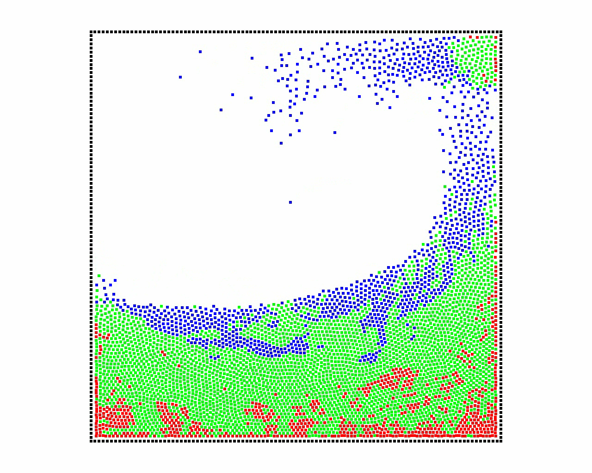
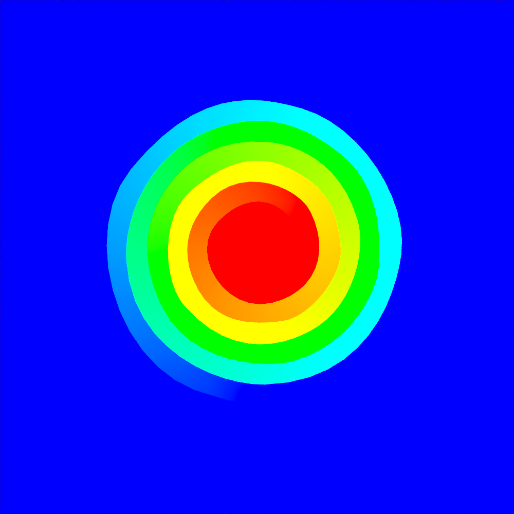
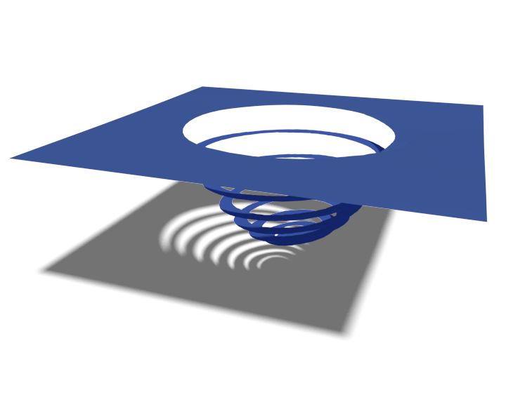

Simulation et contrôle
de phénomènes physiques
Pierre-Luc Manteaux
3 Octobre 2016
Sous la direction de François Faure et Marie-Paule Cani
Université Grenoble-Alpes, CNRS (LJK) and Inria
Contexte : L'informatique graphique
Créer-Interagir avec des environnements virtuels

Gain de temps considérable - Absence de limites
Contexte : Simulation physique
Simuler-Visualiser-Interagir avec des phénomènes réalistes
Divertissement
Jeux vidéosEnseignement
Chirugie virtuelle
Fabrication
Design
Immersion
Conception + rapide
Contexte : Simulation physique
Approximer le comportement d'un objet
Contexte : Simulation physique
Défis en simulation physique
Complexité calculatoire

[Koschier et al. 2016]
20s simulation = 30h calcul
Défis en simulation physique
Modélisation efficace de changements topologiques

[Pfaff et al. 2014]
2s simulation = 1h calcul
Peu présent dans un contexte interactif
Défis en simulation physique
Contrôle intuitif
Contributions de cette thèse
Complexité calculatoire
Changements topologiques
Contrôle intuitif
Modèle adaptatif
Découpe interactive
Sculpture d'animation
Adaptativité des modèles physiques
Extension de l'ARPS à l'informatique graphique
Motivations
Tant de calcul pour si peu de mouvement
Notre approche
Concentrer les calculs dans les zones dynamiques
2.7x plus rapide
État de l'art : Modèles adaptatifs
Mise à jour dynamique des modèles
pour le
meilleur compromis précision/performance/stabilité
[Narain et al. 2012] Déformation

[Horvath et al. 2013] Distance surface / caméra
État de l'art : Modèles adaptatifs
État de l'art: Freezing
Gagner du temps dans les situations quasi-statiques
Objets Rigides
Rigides Articulés
Liquides
[Schmidl et al. 2002] [Guendelman et al. 2003]
Nombre constant de degrés de liberté
Défi : Réactiver de manière cohérente une simulation
Adaptively Restrained Particle Simulations (ARPS)
Issu de la Dynamique Moléculaire, [Artemova & Redon 2012]
Adaptively Restrained Particle Simulations (ARPS)
Issu de la Dynamique Moléculaire, [Artemova & Redon 2012]
Adaptively Restrained Particle Simulations (ARPS)
Issu de la Dynamique Moléculaire, [Artemova & Redon 2012]
Adaptively Restrained Particle Simulations (ARPS)
Issu de la Dynamique Moléculaire, [Artemova & Redon 2012]
Adaptively Restrained Particle Simulations (ARPS)
Issu de la Dynamique Moléculaire, [Artemova & Redon 2012]
Contributions
Extension de ARPS aux simulations graphiques
Simulation de liquide
ARPS + SPH
Simulation de vêtements
Intégrateur implicite
Extension aux liquides particulaires
Combinaison simple avec l'ARPS

- Choix du modèle SPH [Becker et al. 2007]
- Algorithme incrémental SPH + ARPS
Calcul restreint aux particules actives/transitives
- Calcul des scalaires/forces
- Recherche des voisins
Mise à jour des particules inactives par symétrie
Extension aux liquides particulaires
Dam Break - 5000 particules
Extension aux liquides particulaires
Dam Break - 5000 particules
Extension aux liquides particulaires
Dam Break - 5000 particules

|
 |

|
| SPH | SPH + ARPS | |
- Accélération : 3.85x
- Caractéristiques préservées
Extension à la simulation de vêtement
Explicite
- - Stabilité
- - Petit $\Delta t$
Implicite
- + Stabilité
- + Grand $\Delta t$
- - Coût
| $m$ | masse |
| $\mathbf{p}$ | quantité de mouvement |
| $\mathbf{f}$ | force |
| $M$ | Matrice de masse |
| $K$ | Matrice de raideur |
Résolution d'un système linéaire
$$ \displaystyle \left( I - \Delta t^{2}KM^{-1} \right)\Delta \mathbf{p} = \Delta t \left( \mathbf{f} + \Delta t K M^{-1}\mathbf{p} \right) $$
Extension à la simulation de vêtement
Intégration implicite de l'ARPS
$$ \displaystyle \left( I - \Delta t^{2}K\mathbf{\textcolor{blue}{R}}M^{-1} \right)\Delta \mathbf{p} = \Delta t \left( \mathbf{f} + \Delta t K M^{-1} \mathbf{\textcolor{blue}{s}} \right) $$
| $$ \left. \begin{array}{ll} \mathbf{\textcolor{blue}{R}} \text{ matrice diagonale par bloc} & \\ \mathbf{\textcolor{blue}{s}} \text{ vecteur} & \end{array} \right\rbrace $$ | Encapsule la transition et l'état des particules |
| Inactif | $$\left\lbrace\begin{array}{l}R=\mathbf{0}\\s=\mathbf{0}\end{array}\right.$$ | $$I\Delta p = \Delta t \mathbf{f}$$ | Explicite |
| Actif | $$\left\lbrace\begin{array}{l}R=I\\s=\mathbf{p}\end{array}\right.$$ | $$\left( I-\Delta t^{2} KM^{-1}\right)\Delta p = \Delta t \left( \mathbf{f} + \Delta t KM^{-1}\mathbf{p}\right)$$ | Implicite |
Réduire la taille du système linéaire aux particules actives/transitives
Extension à la simulation de vêtement
Extension à la simulation de vêtement

- Accélération: 2.7x
- Taille système linéaire réduite
Synthèse
Extension de l'ARPS à l'informatique graphique
Approximation cohérente de simulation de particules
Contributions
- Liquide : Algorithme SPH+ARPS
- Vêtements : Intégrateur implicite
- + Accélération importante
- + Coût mémoire constant
Limitations & perspectives
- Instabilités intégrateur implicite
- Utilisation de critères visuels (distance caméra)
[Manteaux, Faure, Redon, Cani, VRIPHYS'13]
[Manteaux, Wojtan, Narain, Redon, Faure, Cani, CGF'16]
Découpe détaillée et interactive
d'objets fins
Motivations
Changements topologiques = Immersion
$\text{Détails}=f\left(\text{degrés de liberté}\right)$
Notre approche
État de l'art
Changements topologiques

Variation importante du nombre de DDL
Modèle déformable à base de repères
[Gilles et al. 2011, Faure et al. 2012]


| Fonctions de forme globales | Très peu de DDL |
Processus de découpe
Processus de découpe
Contributions
Découpe détaillée, très peu de DDL
| M.à.j fonctions de formes |  |
| Ré-échantillonnage des repères | |
| Mise à jour incrémentale |
Contributions
Découpe détaillée, très peu de DDL
| M.à.j fonctions de formes | |
| Ré-échantillonnage des repères | |
| Mise à jour incrémentale |
M.à.j des fonctions de forme
M.à.j des fonctions de forme
Grille non-variété
Plusieurs connectivités indépendantes dans une cellule
- Indépendance résolution / détails
- Gestion simple des composantes connexes
Ré-échantillonnage des repères
- Détecter régions vides - Algorithme de remplissage
- Échantillonnage uniforme - Relaxation de Lloyd
- Réduction des discontinuités - Interpolation orientation/vitesse
Résultats
Résultats
Résultats
Performances
|  |  |
|||
| #Repères | $5$ | $47$ | $5 \rightarrow 12$ | $5$ |
| FPS Avant $\vert$ Après |
$60~\vert~60$ | $11~\vert~11$ | $60~\vert~45$ | $45~\vert~35$ |
| $\%$ m.à.j | $43$ | $17$ | $5$ | $15$ |
Synthèse
Découpe intéractive/détaillée avec très peu de d.d.l
Contributions
- M.à.j fonctions de forme
- Ré-échantillonnage des repères
- M.à.j incrémentale
Limitations & perspectives
- Comparaison avec un modèle F.E.M
- Objets volumiques : Grille non-variété ?
- Fracture + détails procéduraux
[Lejemble et al. 2015]
[Manteaux, Sun, Faure, Cani, O'Brien, MIG'15]
Sculpture espace-temps d'animations de liquides

Motivations
Des centaines de simulations avant "la bonne"

Motivation
Approche classique : Processus essai-erreur

- - Paramètres nombreux et indirects
- - Coût calculatoire élevé
- - Passage à l'échelle
Notre approche
Édition Interactive - Intuitive - Réutilisable
État de l'art : Contrôle de simulation
Contraintes spatio-temporelles [Witkin and Kass, 1988]
- + Contrôle direct
- - Coût Élevé
- Formulation intuitive des contraintes
- Résolution numérique efficace
État de l'art : Contrôle de simulation


- + Contrôle direct
- + Méthodes interactives
- - Changements topologiques

- - Coût très élevé
État de l'art : Contrôle de simulation

- + Passage à l'échelle
- + Coût réduit
- - Contrôle indirect

- + Exploration simple
- + Ré-utilisation simulation
- - Contrôle indirect
Contributions
Sculpture d'animations de liquide
- + Pas de re-simulation : Édition/Combinaison d'animations existantes
- + Outils simples : Copier,Coller
- + Méthode indépendante du type de simulation : SPH, FLIP, ...
Extraction des caractéristiques
Détection
Marquage des sommets visuellement intéressants
Segmentation
Regroupement en régions d'intérêt
Aggrégation
Combinaison des régions d'intérêt en caractéristiques
Représentation des caractéristiques
Indépendante de l'animation
Manipulation des caractéristiques
- Transformations affines
- Amplitude de déformation
- Édition de trajectoire
- Re-mappage temporel
Résultats
Résultats
Synthèse
Édition interactive et simple d'animations de liquide
Contributions
- Extraction de caractéristique cohérente
- Outils de sélection, d'édition, d'insertion
Limitations & perspectives
- Sélection semi-automatique
- Édition rigide
[Manteaux, Vimont, Wojtan, Rohmer, Cani, MIG'16]